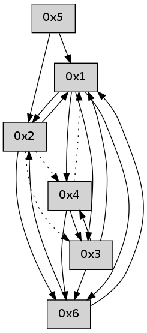

>> << IDX [start] -100 -25 -5 +0 +5 +25 +100 [530.150130033]
 Previous packets
----------------------------------------------------------------------
525.229051 beacon01(adaf) #0 coord=01,02,05,03,04,06 cycle=432.0ms assoc
-- color-indic=0 64 85 17
525.239015 beacon02(adaf) #0 coord=01,02,05,03,04,06 cycle=432.0ms assoc 64 d4 e8
525.249012 beacon05(adaf) #0 coord=01,02,05,03,04,06 cycle=432.0ms assoc 64 72 c2
525.259013 beacon03(adaf) #0 coord=01,02,05,03,04,06 cycle=432.0ms assoc 64 ee e6
525.269014 beacon04(adaf) #0 coord=01,02,05,03,04,06 cycle=432.0ms assoc 64 48 cc
525.279013 beacon06(adaf) #0 coord=01,02,05,03,04,06 cycle=432.0ms assoc 64 3c d0
525.290675 [Hello(3): seq=324 sym=4,6,1 sysInfo= stat=4:5,0,0,0/6:4,0,0,0/1:11,0,0,0]
525.294375 [Hello(6): seq=239 sym=3,1,2 asym=4 sysInfo= stat=3:0,0,0,0/1:14,0,0,0/2:6,0,0,0/4:0,0,0,0]
----------------------------------------------------------------------
525.721159 beacon01(adaf) #0 coord=01,02,05,03,04,06 cycle=432.0ms assoc
-- color-indic=0 64 db 76
525.731119 beacon02(adaf) #0 coord=01,02,05,03,04,06 cycle=432.0ms assoc 64 8a 89
525.741119 beacon05(adaf) #0 coord=01,02,05,03,04,06 cycle=432.0ms assoc 64 2c a3
525.751120 beacon03(adaf) #0 coord=01,02,05,03,04,06 cycle=432.0ms assoc 64 b0 87
525.761120 beacon04(adaf) #0 coord=01,02,05,03,04,06 cycle=432.0ms assoc 64 16 ad
525.771121 beacon06(adaf) #0 coord=01,02,05,03,04,06 cycle=432.0ms assoc 64 62 b1
525.781923 [Hello(1): seq=224 sym=2,6,3 sysInfo= stat=2:9,0,0,0/6:10,0,0,0/3:4,0,0,0]
525.786470 [Hello(4): seq=325 sym=6,3 asym=1 sysInfo= stat=6:4,0,0,0/3:7,0,0,0/1:10,0,0,0]
----------------------------------------------------------------------
526.213266 beacon01(adaf) #0 coord=01,02,05,03,04,06 cycle=432.0ms assoc
-- color-indic=0 64 1f 19
526.223227 beacon02(adaf) #0 coord=01,02,05,03,04,06 cycle=432.0ms assoc 64 4e e6
526.243227 beacon03(adaf) #0 coord=01,02,05,03,04,06 cycle=432.0ms assoc 64 74 e8
526.253227 beacon04(adaf) #0 coord=01,02,05,03,04,06 cycle=432.0ms assoc 64 d2 c2
526.274688 [Hello(6): seq=240 sym=1,2 sysInfo= stat=1:15,0,0,0/2:7,0,0,0]
526.278557 [Hello(3): seq=325 sym=4,6,1 sysInfo= stat=4:6,0,0,0/6:5,0,0,0/1:12,0,0,0]
----------------------------------------------------------------------
526.705374 beacon01(adaf) #0 coord=01,02,05,03,04,06 cycle=432.0ms assoc
-- color-indic=0 64 53 a9
526.715335 beacon02(adaf) #0 coord=01,02,05,03,04,06 cycle=432.0ms assoc 64 02 56
526.725334 beacon05(adaf) #0 coord=01,02,05,03,04,06 cycle=432.0ms assoc 64 a4 7c
526.735335 beacon03(adaf) #0 coord=01,02,05,03,04,06 cycle=432.0ms assoc 64 38 58
526.745335 beacon04(adaf) #0 coord=01,02,05,03,04,06 cycle=432.0ms assoc 64 9e 72
526.755335 beacon06(adaf) #0 coord=01,02,05,03,04,06 cycle=432.0ms assoc 64 ea 6e
526.767025 [Hello(4): seq=326 sym=6,3 asym=1 sysInfo= stat=6:5,0,0,0/3:8,0,0,0/1:10,0,0,0]
526.773107 [Hello(1): seq=225 sym=2,6,3 sysInfo= stat=2:10,0,0,0/6:11,0,0,0/3:5,0,0,0]
----------------------------------------------------------------------
527.197481 beacon01(adaf) #0 coord=01,02,05,03,04,06 cycle=432.0ms assoc
-- color-indic=0 64 97 c6
527.207443 beacon02(adaf) #0 coord=01,02,05,03,04,06 cycle=432.0ms assoc 64 c6 39
527.217443 beacon05(adaf) #0 coord=01,02,05,03,04,06 cycle=432.0ms assoc 64 60 13
527.227442 beacon03(adaf) #0 coord=01,02,05,03,04,06 cycle=432.0ms assoc 64 fc 37
527.237443 beacon04(adaf) #0 coord=01,02,05,03,04,06 cycle=432.0ms assoc 64 5a 1d
527.247443 beacon06(adaf) #0 coord=01,02,05,03,04,06 cycle=432.0ms assoc 64 2e 01
527.259087 [Hello(3): seq=326 sym=4,6,1 sysInfo= stat=4:7,0,0,0/6:5,0,0,0/1:13,0,0,0]
----------------------------------------------------------------------
527.689589 beacon01(adaf) #0 coord=01,02,05,03,04,06 cycle=432.0ms assoc
-- color-indic=0 64 da c1
527.699549 beacon02(adaf) #0 coord=01,02,05,03,04,06 cycle=432.0ms assoc 64 8b 3e
527.709549 beacon05(adaf) #0 coord=01,02,05,03,04,06 cycle=432.0ms assoc 64 2d 14
527.719551 beacon03(adaf) #0 coord=01,02,05,03,04,06 cycle=432.0ms assoc 64 b1 30
527.729552 beacon04(adaf) #0 coord=01,02,05,03,04,06 cycle=432.0ms assoc 64 17 1a
527.739552 beacon06(adaf) #0 coord=01,02,05,03,04,06 cycle=432.0ms assoc 64 63 06
527.751260 [Hello(4): seq=327 sym=6,3 asym=1 sysInfo= stat=6:5,0,0,0/3:9,0,0,0/1:11,0,0,0]
527.754745 [Hello(1): seq=226 sym=2,6,3 sysInfo= stat=2:10,0,0,0/6:12,0,0,0/3:5,0,0,0]
----------------------------------------------------------------------
528.181698 beacon01(adaf) #0 coord=01,02,05,03,04,06 cycle=432.0ms assoc
-- color-indic=0 64 1e ae
528.191659 beacon02(adaf) #0 coord=01,02,05,03,04,06 cycle=432.0ms assoc 64 4f 51
528.201658 beacon05(adaf) #0 coord=01,02,05,03,04,06 cycle=432.0ms assoc 64 e9 7b
528.211659 beacon03(adaf) #0 coord=01,02,05,03,04,06 cycle=432.0ms assoc 64 75 5f
528.221660 beacon04(adaf) #0 coord=01,02,05,03,04,06 cycle=432.0ms assoc 64 d3 75
528.231661 beacon06(adaf) #0 coord=01,02,05,03,04,06 cycle=432.0ms assoc 64 a7 69
528.243339 [Hello(3): seq=327 sym=4,6,1 sysInfo= stat=4:7,0,0,0/6:5,0,0,0/1:14,0,0,0]
----------------------------------------------------------------------
528.673806 beacon01(adaf) #0 coord=01,02,05,03,04,06 cycle=432.0ms assoc
-- color-indic=0 64 52 1e
528.693767 beacon05(adaf) #0 coord=01,02,05,03,04,06 cycle=432.0ms assoc 64 a5 cb
528.723767 beacon06(adaf) #0 coord=01,02,05,03,04,06 cycle=432.0ms assoc 64 eb d9
528.734563 [Hello(1): seq=227 sym=2,6,3 sysInfo= stat=2:10,0,0,0/6:13,0,0,0/3:5,0,0,0]
528.738902 [Hello(4): seq=328 sym=6,3 asym=1 sysInfo= stat=6:5,0,0,0/3:10,0,0,0/1:12,0,0,0]
----------------------------------------------------------------------
529.165913 beacon01(adaf) #0 coord=01,02,05,03,04,06 cycle=432.0ms assoc
-- color-indic=0 64 96 71
529.175874 beacon02(adaf) #0 coord=01,02,05,03,04,06 cycle=432.0ms assoc 64 c7 8e
529.185874 beacon05(adaf) #0 coord=01,02,05,03,04,06 cycle=432.0ms assoc 64 61 a4
529.195874 beacon03(adaf) #0 coord=01,02,05,03,04,06 cycle=432.0ms assoc 64 fd 80
529.205875 beacon04(adaf) #0 coord=01,02,05,03,04,06 cycle=432.0ms assoc 64 5b aa
529.215875 beacon06(adaf) #0 coord=01,02,05,03,04,06 cycle=432.0ms assoc 64 2f b6
529.227518 [Hello(3): seq=328 sym=4,6,1 sysInfo= stat=4:8,0,0,0/6:5,0,0,0/1:15,0,0,0]
529.231259 [Hello(2): seq=823 sym=1,6 asym=4,3 sysInfo= stat=1:10,0,0,0/6:12,0,0,0/4:0,0,0,0/3:5,0,0,0]
----------------------------------------------------------------------
529.658023 beacon01(adaf) #0 coord=01,02,05,03,04,06 cycle=432.0ms assoc
-- color-indic=0 64 ee dc
529.667983 beacon02(adaf) #0 coord=01,02,05,03,04,06 cycle=432.0ms assoc 64 bf 23
529.677983 beacon05(adaf) #0 coord=01,02,05,03,04,06 cycle=432.0ms assoc 64 19 09
529.687984 beacon03(adaf) #0 coord=01,02,05,03,04,06 cycle=432.0ms assoc 64 85 2d
529.697984 beacon04(adaf) #0 coord=01,02,05,03,04,06 cycle=432.0ms assoc 64 23 07
529.707985 beacon06(adaf) #0 coord=01,02,05,03,04,06 cycle=432.0ms assoc 64 57 1b
529.719118 [Hello(1): seq=228 sym=2,6,3,4 sysInfo= stat=2:10,0,0,0/6:13,0,0,0/3:6,0,0,0/4:0,0,0,0]
529.723337 [Hello(4): seq=329 sym=6,3 asym=1 sysInfo= stat=6:6,0,0,0/3:11,0,0,0/1:12,0,0,0]